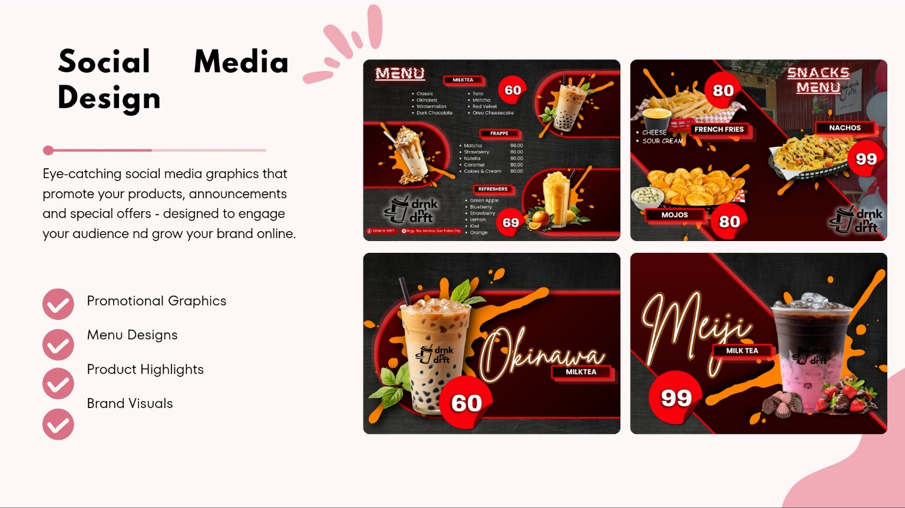
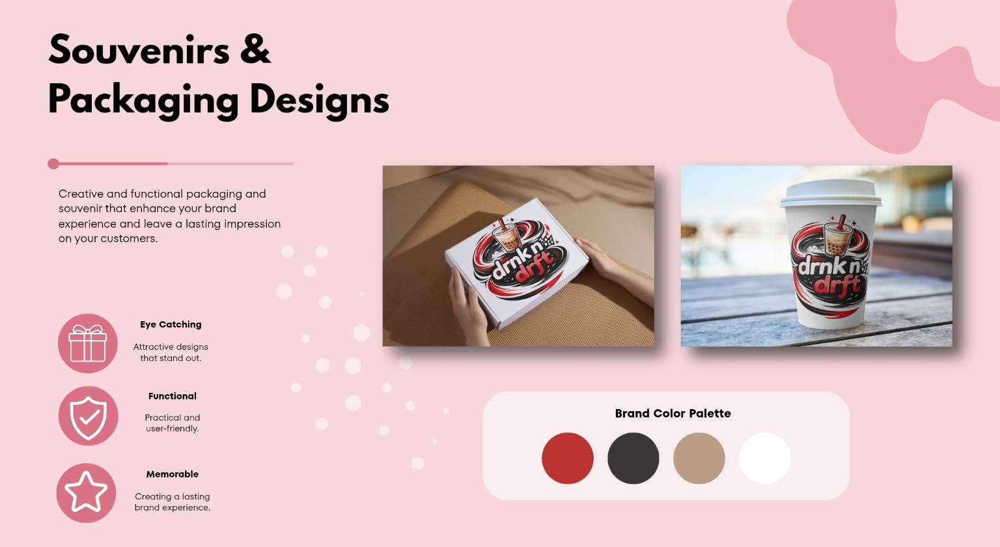
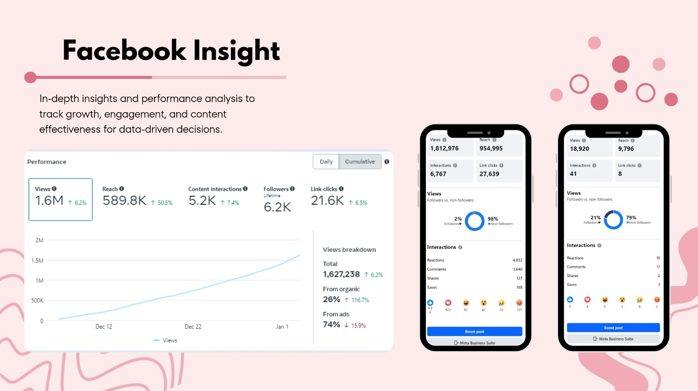

✿
Social Media Content Support
Social media post planning, captions, content calendars, promotional graphics, and consistent brand presentation.
A detail-oriented professional focused on virtual assistance, social media management, and administrative and agency coordination. I help keep workflows organized, communication clear, and day-to-day tasks moving smoothly.
Based in the Philippines · Open to remote opportunities
I'm Jo, a versatile professional with experience in agency coordination, administration, e-commerce, social media management, and visual design. I enjoy helping teams stay organized while creating digital content that feels clear, cohesive, and engaging.
From coordinating day-to-day operations to developing promotional graphics and content ideas, I bring adaptability, communication, and a strong eye for detail to the work I do.
A flexible mix of creative and operational skills to support a brand, business, or team.
Social media post planning, captions, content calendars, promotional graphics, and consistent brand presentation.
Inbox and task organization, scheduling support, documentation, research, follow-ups, and everyday business assistance.
Documentation, team communication, operational follow-ups, issue tracking, and helping daily workflows run smoothly.
Organizing information, documentation, follow-ups, scheduling support, and keeping everyday tasks on track.
Team communication, operational follow-ups, issue tracking, and helping workflows run more smoothly.
Turning rough ideas into organized deliverables, from initial concepts to polished materials ready to share.
Here are sample visual directions for social media content. Replace these concept cards with screenshots of your actual posts from your previous portfolio.

Product highlights, promotional menus, and branded graphics designed to attract attention and support online engagement.

Creative brand applications for packaging and drinkware, with an emphasis on visual consistency and memorable presentation.

Performance reporting concepts covering reach, views, interactions, and content effectiveness to support data-informed decisions.
These project screenshots were provided from your portfolio. Only present the analytics figures as your own results if they reflect accounts you actually managed.
A combination of people coordination, business support, and digital creativity.
Support daily agency operations through coordination with hubs and riders, follow-ups, documentation, and issue resolution.
Help oversee branch activities, coordinate people and tasks, and support smooth day-to-day operations.
Experience and interest in product content, online shop tasks, customer-focused presentation, and digital workflows.
Create and plan visual content, promotional graphics, captions, and branding materials for small-business needs.
Please review role titles, dates, and descriptions for accuracy. Add employment dates and specific achievements where you can verify them.
Creative, communication, and coordination skills that help projects move forward.
Add or remove tools based on your actual experience. You can include software names, certifications, and skill levels here.
I'd love to hear what you're building. Reach out about freelance projects, creative collaborations, or remote opportunities.
Email me ↗